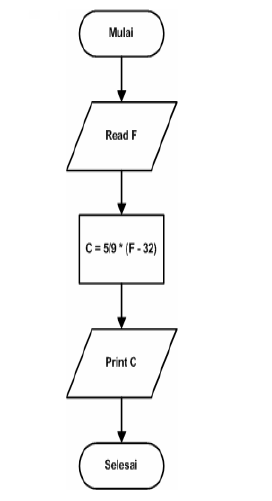

Algoritma Dalam Flowchart
Runtunan
Contoh Flowchart untuk mengubah temperatur dalam Fahrenheit menjadi temperatur dalam Celcius dengan rumus oC = 5/9 x (oF -32).
Pemilihan
Contoh Struktur pemilihan untuk masalah batasan umur. Sebuah aturan untuk menonton sebuah film tertentu adalah sebagai berikut, jika usia penonton lebih dari 17 tahun maka penonton diperbolehkan dan apabila kurang dari 17 tahun maka penonton tidak diperbolehkan nonton. Buatlah flowchart untuk permasalahan tersebut.

Contoh Struktur pemilihan untuk perhitungan dua buah bilangan. Dalam suatu perhitungan nilai P = X + Y. Jika P positif, maka Q = X * Y, sedangkan jika negative maka nilai Q = X/Y. Buatlah flowchart untuk mencari nilai P dan Q
Pengulangan
Contoh Algoritma menggunakan sturktur For untuk mencetak pernyataan sebanyak 100 kali.
Contoh Pengulangan dengan While untuk mencetak nilai tertentu.
Bagaimanakah output dari flowchart tersebut?
- Pada flowchart ini ada dua variabel yang kita gunakan yaitu A dan B. Kedua variabel tersebut kita inisialisasi nilai awalnya (A = 1 dan B = 0) sebelum proses loop terjadi. Variabel A adalah variabel counter.
- Pada simbol decision, nilai A akan diperiksa apakah memenuhi kondisi (< 10). Jika Ya maka perintah berikutnya dieksekusi, jika tidak maka program akan berhenti. Pada awal eksekusi ini kondisi akan terpenuhi karena nilai A = 1.
- Jalankan perintah Print B.
- Nilai variabel A kemudian diganti dengan nilai A lama (1) ditambah 2. Sehingga nilai variabel A baru adalah 3. Sedangkan nilai variabel B = 9 (hasil perkalian A = 3).
- Program akan berputar kembali untuk memeriksa apakah nilai variabel A masih lebih kecil dari 10. Pada kondisi ini nilai A = 3, sehingga kondisi masih terpenuhi. Kemudian langkah berulang ke langkah ke 3. Begitu seterusnya sampai nilai variabel A tidak lagi memenuhi syarat kurang dari 10. Sehingga output dari flowchart ini adalah : 0, 9, 25, 49, 81.